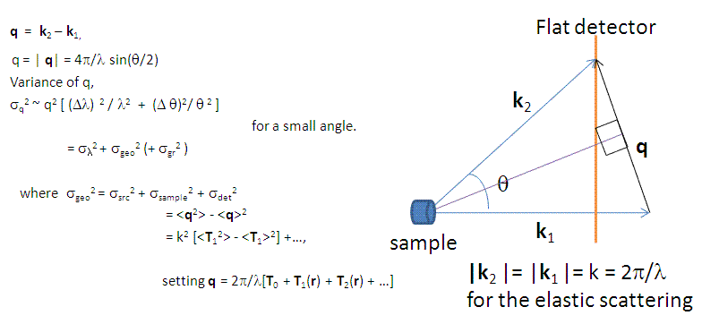

This tool is to approximately estimate the resolution of Q based on the SAS instrumental parameter values assuming that the detector is flat and vertical to the incident beam direction.
1. Select the source and source type (Monochromatic or TOF). Note that the computational difference between the sources is only the gravitational contribution due to the mass.
2. Change the default values of the instrumental parameters as desired.
3. The input formats of wavelength and its spread (=FWHM/wavelength) depend on the source type.
4. For TOF, the default wavelength spectrum is flat. The custom spectrum file (with 2 column text: wavelength(A) vs. intensity) can also be loaded by selecting "Add new" in the combobox.
5. Once set all the input values, click the compute button. Depending on computation loads the calculation time will vary.
6. 1D and 2D dQ will be displayed in the text-box at the bottom of the panel. Two dimensional resolution weight distribution (2D elliptical Gaussian function) will also be displayed in the plot panel even if the Q inputs are outside of the detector limit. The red lines indicate the limits of the detector (if a green lines appear (for TOF), it indicates the limits of the maximum q range for the largest wavelength due to the size of the detector). Note that the effect from the beam block is ignored, so in the small q region near the beam block [ie., q < 2*pi*(beam block diameter) / (sample to detector distance) / lamda_min] the variance is slightly under estimated.
7. The summary can be accessed by clicking the 'light-bulb' icon at the bottom of the SasView main window.
The scattering wave transfer vector is by definition, 
In the limit of the small angle, the variance of q in the first order approximation is


Finally, we use a Gaussian function to describe the 2D weighting distribution of the uncertainty in q.
D.F.R. Mildner and J.M. Carpenter, J. Appl. Cryst. 17, 249-256 (1984).
D.F.R. Mildner, J.M. Carpenter and D.L. Worcester, J. Appl. Cryst. 19, 311-319 (1986).